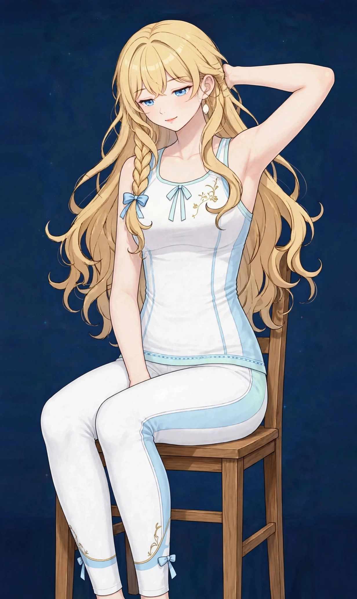
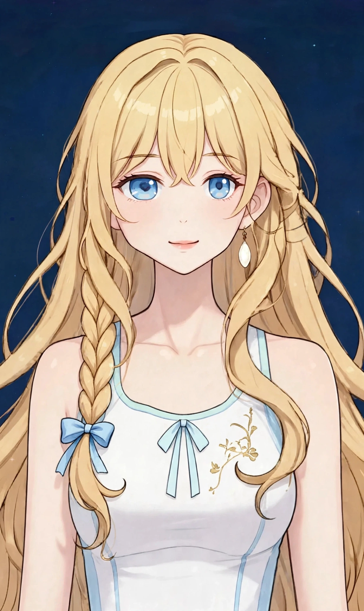
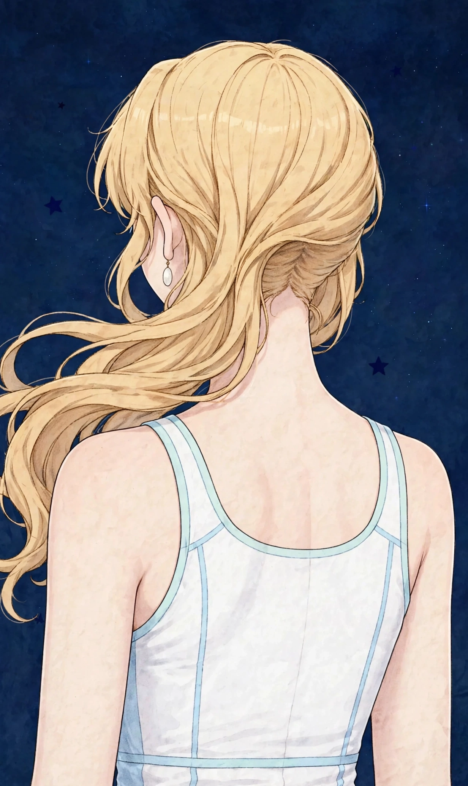

梅田で週末に整えたい首こり｜休みの日の過ごし方とセルフケア、受診の目安ハウツー

梅田で働く・暮らす方へ。平日を過ごした週末に「休みの日なのに首が重くて回しにくい」「朝、起き抜けから首の付け根がこわばっている」「スマホをうつむいて見続けたあとや、家事で下を向く時間が続いたあとに首まわりの張りが残る」と感じる首こりについて、一般的な解説と考えられる要因の整理、週末に取り入れられるセルフケア、医療機関への受診の目安をまとめました。一般的な健康情報としてお読みください。
#梅田 週末 首こり#週末 首こり 重い#休みの日 首こり セルフケア#梅田 女性専用 サロン 首#土曜日 首こり ケア
週末に気になる首こりとは（一般的な解説）
首こりとは、病名ではなく、「首が重くて回しにくい」「首の付け根がこわばる」「後頭部から首、肩にかけて張りが残る」と感じる感覚を表す言葉として使われることがあります。頭は体重のおよそ1割ほどの重さがあるとされ、その重さを細い首が支えているため、首まわりは日常の姿勢の影響を受けやすい部位とされます。平日の仕事中に気になる首こりとは場面が異なり、週末は「休んでいるはずなのに首が重い」「せっかくの休みなのに、朝から首が回しにくい」といった形で自覚する方が多いとされます。土曜の朝に顔を洗うとき、買い物で下を向いて品物を選ぶとき、映画館で同じ姿勢が続いたあとに気づく、という声は、働く女性からよく聞かれます。感じ方には個人差が大きく、少し動いているうちに気にならなくなる方もいれば、週末いっぱい張りを引きずるように感じる方もいるとされます。
大切なのは、「平日と比べてどうか」「どんな週末の過ごし方のあとに気になりやすいか」という視点です。平日に画面作業が続いた週なのか、週末にスマホを見る時間が長かった日なのか、長く寝た朝なのか——気になりやすい場面を簡単に記録しておくと、自分の傾向がつかみやすくなります。この記事では、週末に気になる首こりの一般的な解説と、背景として考えられる要因の整理からお伝えします。なお、首こりの感じ方だけで体の状態を判断することはできません。気になる変化が続く場合は、後半の「受診の目安」もあわせてご確認ください。
考えられる要因の整理
1つ目は、平日の過ごし方の持ち越しです。デスクワークで画面に向かう時間が長い日や、スマホをうつむいて見る姿勢が続く日が重なると、その負担感を週末まで持ち越したように感じることがあるとされます。首は頭の重さを支える部位で、うつむく角度が深くなるほど首まわりへの負担が大きくなるとされるため、平日にうつむき姿勢が続いた週ほど、週末に首の張りを自覚しやすい方がいるとされます。ただし、感じ方には個人差があり、「姿勢が原因」と決めつけられるものではありません。
2つ目は、週末の過ごし方の変化です。休みの日は、平日不足した睡眠を埋めようと長く寝る、ソファや床に座ってスマホや画面をうつむいて長く見る、といった「同じ姿勢が続く時間」が長くなりがちです。寝る姿勢や枕の当たり方がいつもと違う朝に、首の付け根のこわばりを感じる、という声も聞かれます。一方で、掃除や料理、洗濯物をたたむといった、下を向く家事が一日に集中することもあります。平日との活動量や姿勢の差が大きい週末ほど、首まわりに張りを感じやすい、という声も聞かれます。
3つ目は、冷えや季節との関わりです。週末に冷房の効いた場所で長く過ごした、薄着で家事をしていた、といった冷えが、首まわりの張りの背景として挙げられることがあります。東洋医学では、首の後ろは、背中を広く巡る膀胱経や、体の側面から耳のまわりへ至る胆経のエリアと重ねて考えられてきた歴史があり、張りの背景を「気・血の巡り」と結びつけて捉えることもあります。要因はひとつではなく、平日の働き方と週末の過ごし方、季節によって組み合わせが変わるため、思い当たるものをひとつずつ見直すことが大切です。
首まわりで働く主な筋肉の位置は、図1のとおりです。
図1｜週末に負担が集まりやすい首まわりの筋肉

週末に取り入れられるセルフケア
まずは「温める」ことです。週末の入浴で首の付け根まで湯船につかる、蒸しタオルや温かいタオルを首の後ろや付け根に当てるといった方法は、冷えてこわばった部位をいたわる基本とされます。家事の合間に首まわりを冷やさない服装を心がけることも、日常に取り入れやすい工夫です。蒸しタオルや入浴の際は、やけどやのぼせに十分注意してください。貼るタイプの温熱用品を使う場合は、低温やけどに十分注意し、使い方の表示を確認してください。
次に「軽く動かす」ことです。朝、布団の中であごを軽く引いて首の後ろを伸ばす、起き上がってから首をゆっくり左右に倒す・小さく回す、両手を組んで胸を開くように伸ばす、といった小さな動きは、朝の支度の中でも取り入れやすいものです。スマホを見る合間に一度画面から目を離して首をゆるめる、スマホを持つ高さを少し上げる、といった工夫も挙げられます。強くひねったり、痛みを感じるほど伸ばしたり、勢いよく回したりする必要はありません。首を動かす範囲は、その日の感じ方に合わせて無理のない範囲にとどめてください。
あわせて、週末の過ごし方そのものも見直してみてください。用事を一日に詰め込みすぎず、家事の合間に座って休む時間を挟む、起きる時刻のずれをほどほどにとどめる、といった組み立ては、週明けの過ごし方ともつながっています。ただし、セルフケアはあくまで日常の張りへの対処です。特定の方法に頼りすぎたり、気になる状態を我慢して予定を重ね続けたりしないようにしてください。張りが強い日は、ケアよりもまず体を休めることを優先することも大切です。
首まわりの代表的なツボの位置は、図2のとおりです。
図2｜首まわりのツボの位置

受診の目安｜こんなときは医療機関へ
週末に気になる首こりの多くは、平日の姿勢や週末の過ごし方、冷えといった日常の要素が重なって感じられるとされますが、中には医療機関での確認を優先したいサインもあります。「手や指のしびれや、力が入りにくい感じを伴う」「首を動かせないほど強い痛みがある、痛みが少しずつ強くなっている」「腕が上がりにくい、首を動かせる範囲が狭くなってきた状態が続く」「発熱を伴う」「転んだりぶつけたりしたあとから気になり始めた」「夜間の痛みで眠りが妨げられる日が続く」「日常生活や仕事に支障が出るほどつらい状態が続いている」といった場合は、セルフケアで様子を見続けず、整形外科など医療機関への受診をおすすめします。
また、首の張りや痛みの背景には、首まわりの関節や神経の状態など、検査で初めて分かる要素が関係していることもあるため、気になる状態が続く場合は一度相談してみてください。当店のケアはリラクゼーションを目的としたボディケアで、首の状態や病気を診断したり、それらに対応したりするものではありません。医療機関での確認を優先したうえで、日常のコンディションを整える選択肢のひとつとしてご利用ください。
当店でのケアとサロンのご案内
ステラポラリスは、大阪・梅田エリアのレンタルサロンで施術する女性専用・完全予約制のサロンです。営業は月〜土17:00〜22:00（日曜休み）のため、週末は土曜の夕方から夜の時間帯にご利用いただけます。施術はオイルマッサージと美容整体、料金は90分10,000円です。ご予約はLINE公式アカウント「ポラリス美容整体院」で受付中です。場所は大阪市北区堂山町12-5 ロイヤルハイツ梅田Ⅱ 303号室（レンタルサロンACE内）、中崎町駅から徒歩5分・阪急梅田駅から徒歩8分です。入室方法の詳細はご予約確定後にLINEでご案内します。
週末の首こりについては、施術の際に「平日はどんな姿勢で過ごすことが多いか」「週末はどんな過ごし方だったか」をうかがいながら、その日の首の付け根や後頭部まわり、肩・肩甲骨まわりや背中を含めて順にほぐすケアを組み立てます。首は繊細な部位のため、圧の強さはお好みに合わせて調整しますので、遠慮なくお伝えください。担当は施術歴30年・鍼灸師資格を持つセラピスト1名で、当店では鍼灸施術は行いません。関連するお悩みページ「首こり」「肩こり」や、経絡ページ「膀胱経」「胆経」でも、体の見方やケアの考え方を紹介していますので、あわせてご覧ください。料金や営業時間の詳細は、メニュー・料金ページでもご確認いただけます。